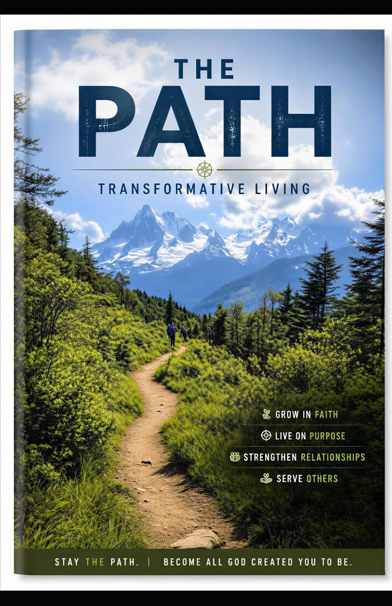

The Path · Free 7-day tracker
The Tuesday
Test
Seven days. Five minutes a day. One honest question: does it still hold on an ordinary Tuesday?
Judah BeckerMinister · counselor · founder of Change A Destiny
From The Path: Transformative Living
8 pages · print it
How it works
Feelings fade by Tuesday.
A good Sunday can carry you to about Monday night. A practice is what's still standing on an ordinary Tuesday, when nothing feels spiritual at all. Seven days is long enough to hit one.
Each day takes five minutes
1 minSit still. Phone face down. Rate how steady you feel, 1 to 5.
3 minDo the day's practice. Each one is a few lines long.
1 minWrite one line. Rate yourself again. Tick the box.
The rules
- Same time each day if you can. Mornings work for most people.
- Miss a day? Don't start over. Pick up the next day's page.
- "Nothing happened" is a valid answer. Write it down; it's data.
- On Day 7 you look at your numbers and decide for yourself.
Who it's from. Judah Becker has served for more than 50 years as a minister, missionary and counselor, and holds a Master's degree in Counseling. He is a Messianic Jew, a Jewish follower of Jesus, and sometimes uses Jesus' Hebrew name, Yeshua. No church background is needed for this week.
What this is not. A faith-based reflection practice, not therapy and not a substitute for counseling or crisis care. If you are in crisis in the US, call or text 988.
The Tuesday Test2
Your week at a glance
The tracker.
Fill in a row each day. "Before" and "after" are how steady you feel, from 1 (scattered) to 5 (settled). Circle one.
| Practice | Date | Before | After | Done |
|---|
| 1 | An ancient prayerPsalm 23, slowly | | 1 2 3 4 5 | 1 2 3 4 5 | |
| 2 | The serenity lineOne thing to accept, one to change | | 1 2 3 4 5 | 1 2 3 4 5 | |
| 3 | Read it three timesFind the phrase that stays | | 1 2 3 4 5 | 1 2 3 4 5 | |
| 4 | The resolveOne sentence to carry today | | 1 2 3 4 5 | 1 2 3 4 5 | |
| 5 | Five namesPray one line for each | | 1 2 3 4 5 | 1 2 3 4 5 | |
| 6 | Listen and writeThen act on one small thing | | 1 2 3 4 5 | 1 2 3 4 5 | |
| 7 | The verdictRead your numbers back | | 1 2 3 4 5 | 1 2 3 4 5 | |
Days 1 to 6 follow the first level of Judah's Prayer Path: ancient prayers, personal prayer, prayer for others, and a listening journal.
The Tuesday Test3
Ancient prayers
1
Psalm 23, slowly
Day one
Judah starts here because ancient prayers are "training grounds for the soul." Read these lines twice, slowly. Circle the phrase that stays with you.
The LORD is my shepherd; I shall not want. He maketh me to lie down in green pastures: he leadeth me beside the still waters. He restoreth my soul.Psalm 23:1–3 (KJV)
The phrase that stayed, and why
Date ________Before 1 2 3 4 5After 1 2 3 4 5Done
2
The serenity line
Day two
Pray it once out loud, even if it feels strange. Then answer it honestly, about this week, not your whole life.
God, grant me the serenity to accept the things I cannot change, the courage to change the things I can, and the wisdom to know the difference.The Serenity Prayer
One thing I can't change this week
Date ________Before 1 2 3 4 5After 1 2 3 4 5Done
The Tuesday Test4
Personal prayer
3
Read it three times
Day three
Pick one short passage below. Read it three times, slower each time. Don't study it; wait for the word or phrase that lifts off the page. In the book, one woman's was simply "Do not be afraid."
Be still, and know that I am God.Psalm 46:10 (KJV)
Come unto me, all ye that labour and are heavy laden, and I will give you rest.Matthew 11:28 (KJV)
The word or phrase that lifted
Date ________Before 1 2 3 4 5After 1 2 3 4 5Done
4
The resolve
Day four
Reread yesterday's phrase. Then say one sentence back, out loud: the thing you'll hold onto today. It doesn't need to be impressive. In the book, Elias's was: "I don't need to have every answer today. I will stay close and trust You."
My one sentence for today
Tonight: did it hold?
One line before bed. Yes, no, or partly, and where it slipped.
Date ________Before 1 2 3 4 5After 1 2 3 4 5Done
The Tuesday Test5
Prayer for others · listening
5
Five names
Day five
Judah's point is that prayer is "never meant to remain a self-centered exercise." Write five people already in your life. Pray one plain sentence for each: what you think they need right now.
Date ________Before 1 2 3 4 5After 1 2 3 4 5Done
6
Listen, write, act once
Day six
Pray briefly. Reread Day 3's passage. Then sit for one quiet minute and write whatever comes, even "I heard nothing." If one of yesterday's names comes to mind, send that person a two-line text today.
Who I texted, and what happened
Date ________Before 1 2 3 4 5After 1 2 3 4 5Done
The Tuesday Test6
Day seven · the verdict
Read your numbers back.
No one grades this but you. Turn back to the tracker on page 3 and answer plainly.
How many boxes did I tick?
Out of six. Four or more on an ordinary week is a real result.
Which day moved my "after" number the most?
Which day felt hollow?
Worth knowing. Not every practice fits every person.
The ordinary day: what happened on my most normal day this week?
That's your Tuesday. Did the five minutes still happen?
The one practice I'll keep next week
If it held: keep the one practice for another week before adding anything. If it didn't, that's honest too. Try again with a different time of day before you decide it isn't for you.
Date ________Before 1 2 3 4 5After 1 2 3 4 5Done
The Tuesday Test7
Where this goes
You just walked Level One.
This week was a short version of the first level of Judah's Prayer Path. The book walks all four steps in full, then keeps going.
Step 1
Ancient prayers
Days 1–2
Step 2
Personal prayer
Days 3–4
Step 3
Prayer for others
Day 5
Step 4
Listening journal
Day 6
Take the free Path Assessment
Read the book, $9.10
The Path: Transformative Living. Kindle and paperback.
On Amazon Walk it with others
A six-module course with live weekly calls with Judah is forming. Reserving a seat charges nothing.
See the curriculum

About Change A Destiny. A Christian humanitarian ministry Judah founded in 2008. It works through local leaders in Thailand, Cambodia, Nepal and India to rescue children from exploitation and help communities become self-sufficient. A registered 501(c)(3) public charity, EIN 35-2380335.
path.changeadestiny.org · changeadestiny.org
Adapted from The Path: Transformative Living © Judah Becker. All rights reserved. Free to print and share for personal use. Scripture from the King James Version (public domain). Cover image is AI-generated illustration. This tracker is a faith-based reflection practice, not therapy or medical advice.
The Tuesday Testchangeadestiny.org